英雄传说：闪之轨迹IV·完美攻略·终版（6）
英雄传说：闪之轨迹IV完美攻略·终版
出品：浅闻小鉴攻略组
作者：夏浅线。
文本精校：Mr.Μǎ Lip
8月22日
梅尔卡瓦
★剧情解锁托娃人物
★剧情解锁克蕾雅少校人物
★剧情获得马奇亚斯人物信息：父子的气概
★更新红之罗丝薇瑟人物为安洁莉卡·并且获得安洁莉卡人物信息：罗丝薇瑟面具
获得3点羁绊点
甲板
★库尔特对话两次·获得库尔特波波碰帐号
★对库尔特按左下角对应挑战键开始挑战VM卡牌游戏
胜利后·获得：生命露水/力量露水/守护露水/魔力露水/心灵露水各3个
胜利后·可再次对库尔特按左下角对应挑战键开始挑战VM卡牌游戏·并解锁HARD难度
胜利后·获得：U物质3个
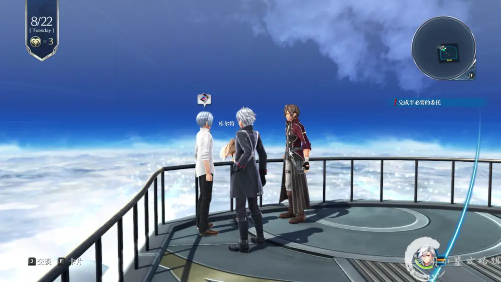
下层
★对安洁莉卡按左下角对应挑战键开始挑战VM卡牌游戏
胜利后·可再次对安洁莉卡按左下角对应挑战键开始挑战VM卡牌游戏·并解锁HARD难度
胜利后·获得：U物质3个
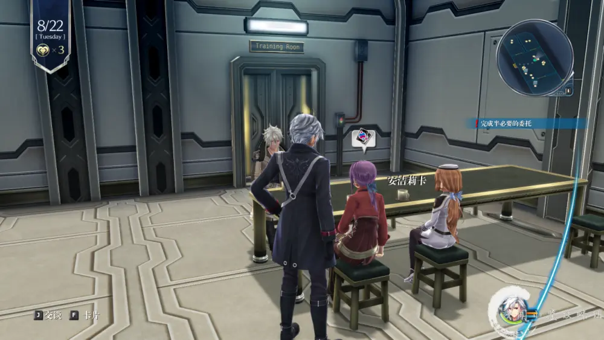
★柜台艾玛可买：帝国时报·第6号
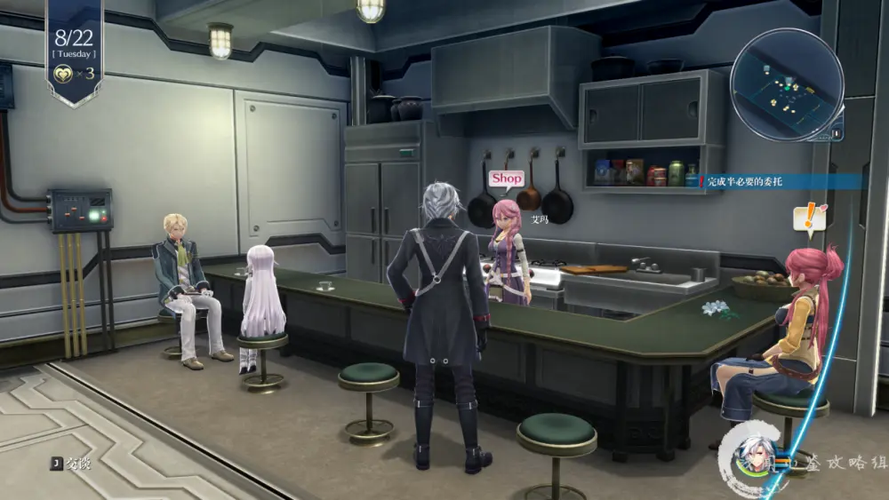
资料室内·书架的黑色史书更新·记得阅读（后续需要）
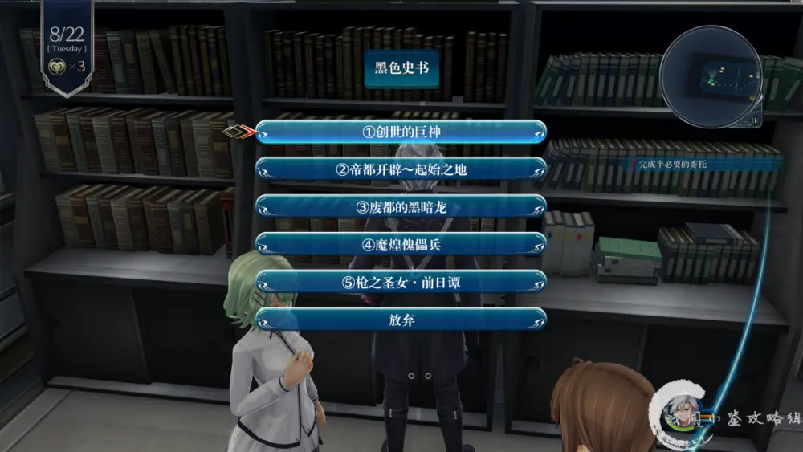
工房内·随从骑士流纳可买：部分机车配色
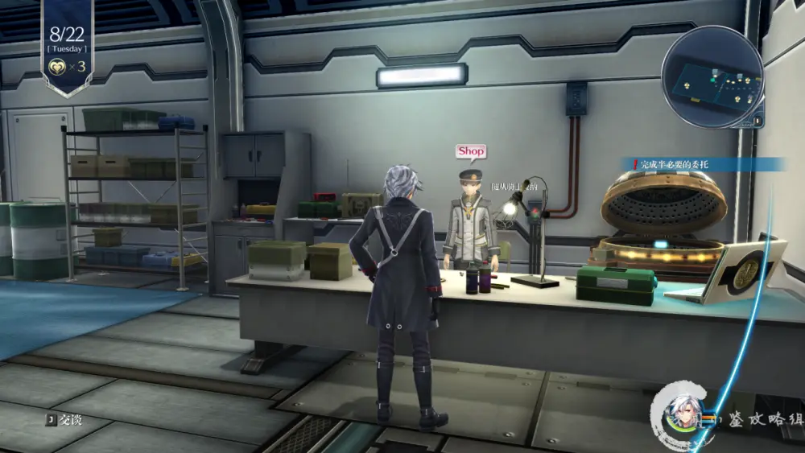
接着开始羁绊活动
每一次羁绊活动会消耗1点羁绊点数
目前可羁绊角色：瑟蕾奴·亚修·尤娜·莎拉·亚莉莎——5选3
注：后续任务会给羁绊点
每次消耗羁绊点都会与羁绊角色+星值
注意：羁绊④会进入指定场景进行战斗·并且收集新的敌人情报
①上层·医务室内·瑟蕾奴
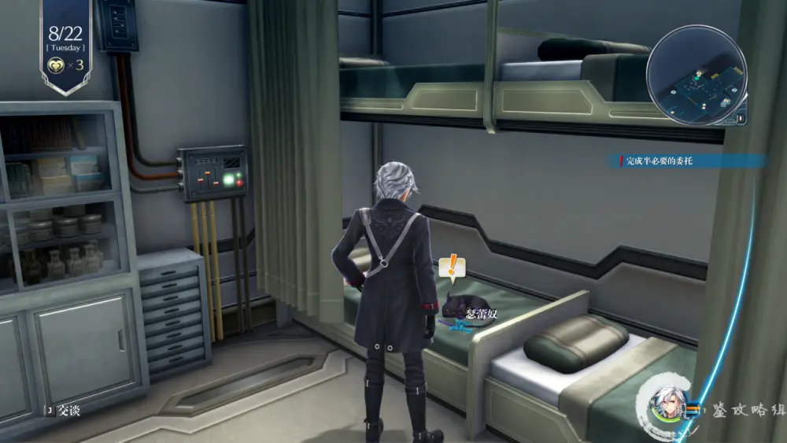
②休息室内·亚修
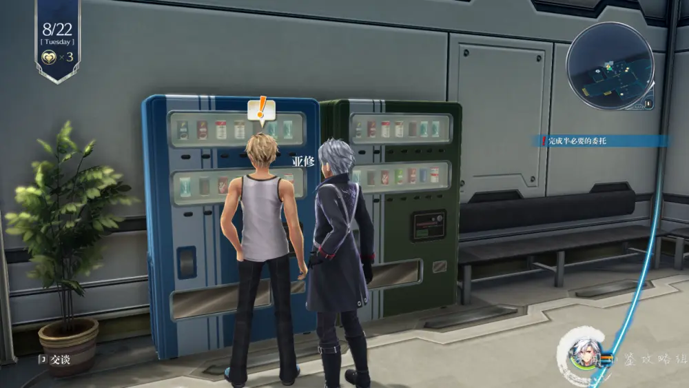
③下层·尤娜
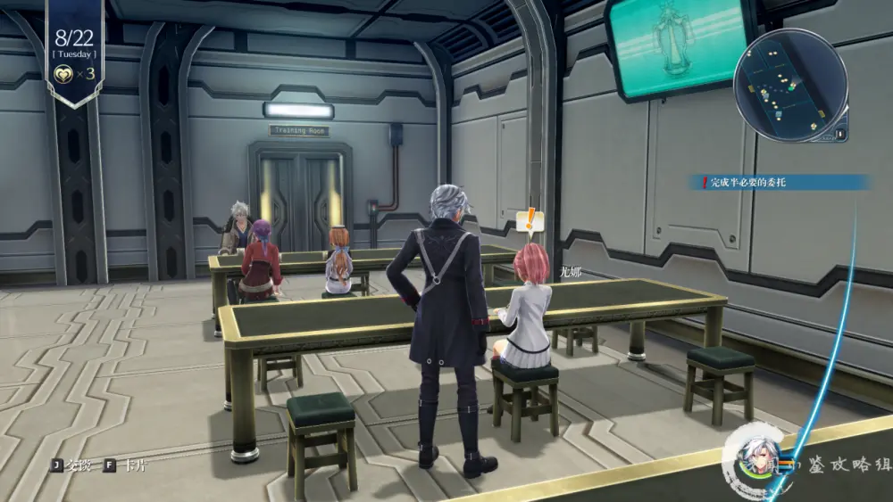
④莎拉
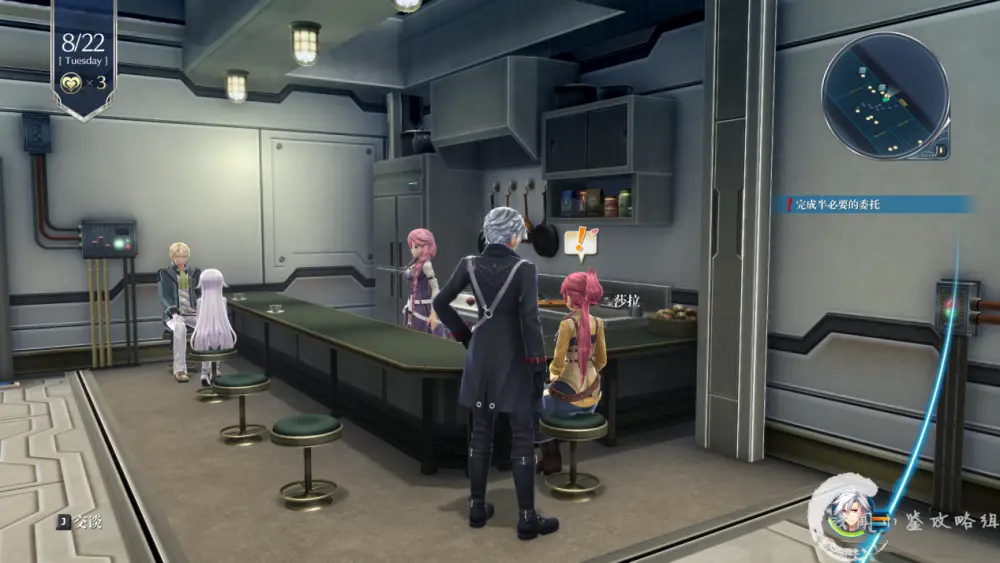
羁绊活动④会进入新场景
北朗格多克峡谷道②
EXTRA新敌人共1个：黎恩
记得收集情报
★⑤下层·工房内·亚莉莎·并且获得亚莉莎人物信息：封印住的心意
注意：亚莉莎的第一个羁绊·继承了闪之轨迹III和没继承闪之轨迹III的通关存档
在剧情上会有出入
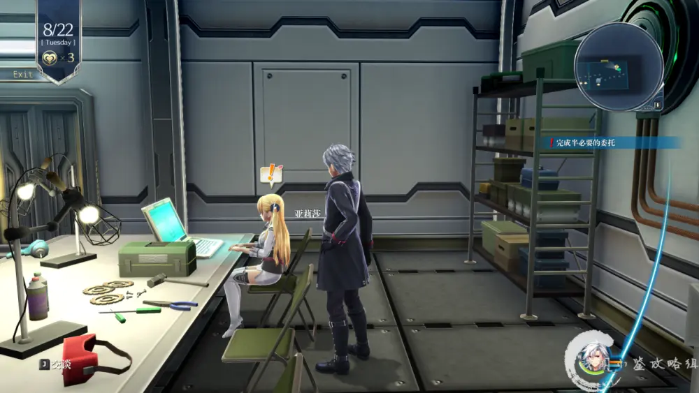
★ARCUSII报告战斗笔记·当前总情报登记数为198
获得：力量露水/守护露水各3个
获得：托尔兹复兴值5点·累积123点
★ARCUSII报告书籍笔记
获得：生命露水3个
获得：托尔兹复兴值5点·累积128点
★ARCUSII报告风景照
获得：印刷照片⑦泳装奥蕾莉亚
获得：托尔兹复兴值2点·累积130点
★ARCUSII玩波波碰
库尔特
首次胜利·获得：U物质4个·库尔特星值
西拉玛尔街道②
本区域新敌人共2个：
支线怪：斯库拉曼姆·鹦鹉贝
记得收集情报
支线
西拉玛尔街道的通缉魔兽
①8月22日·在梅尔卡瓦终端机上·接取此任务
②西拉玛尔街道②·走到红色圆圈处·存档！！！·前走·触发战斗
BOSS：斯库拉曼姆
怪弱地/空
另外还有一个小怪
记得收集情报
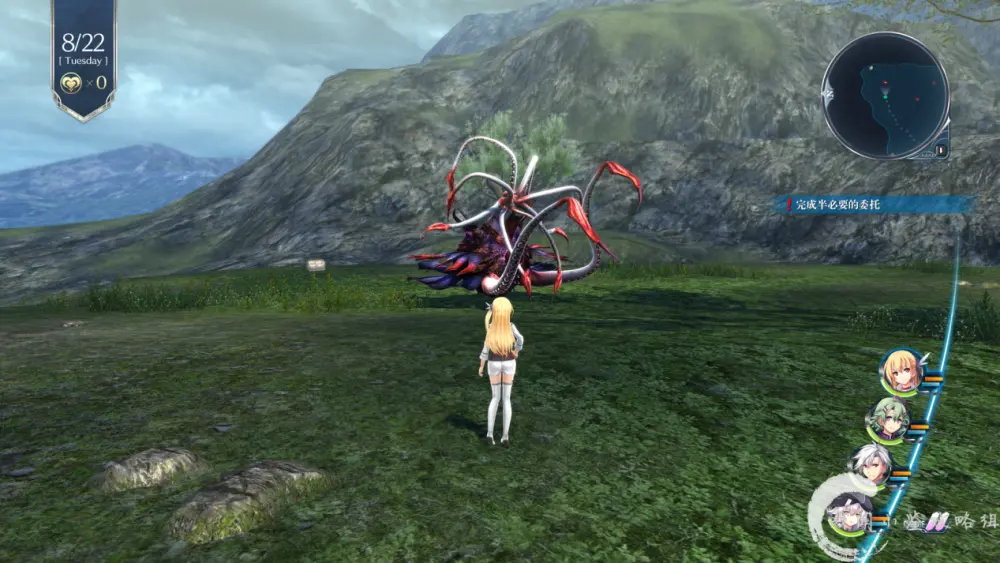
获得奖励：5500米拉·1点羁绊点
获得AP：3
支线完成
西拉玛尔街道
西拉玛尔街道·旧演习地
★蕾欧诺拉对话·获得蕾欧诺拉人物信息：大哥哈曼
并且获得机车
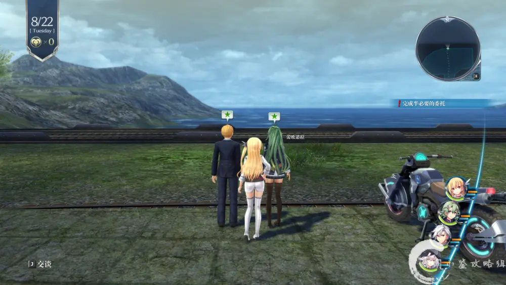
欢乐都市拉克威尔
★当铺《麦肯罗》内·柜台麦肯罗可交换：盖乌斯指定礼物：风牙绳带
风牙绳带需要：狄肯肋排（啤酒屋·餐厅《狄肯》购买）·隐士深蓝（酒吧·住宿《隐士》购买）
风牙绳带礼物增加盖乌斯STR/ATS15·黎恩STR/ATS2
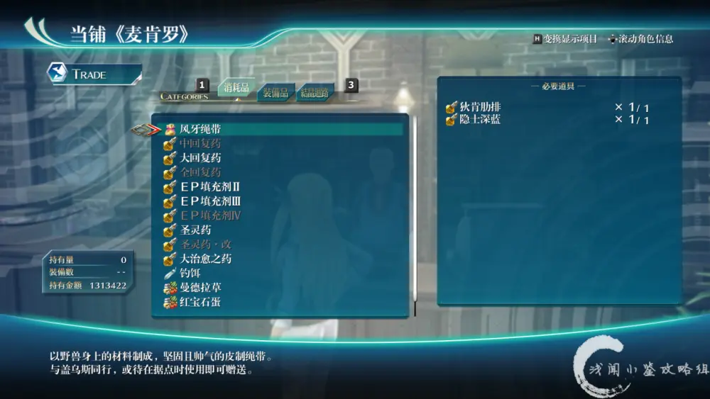
★赌场《亚莉夏》内·柜台受理人员兰克斯可用筹码交换：安洁莉卡指定礼物：紫罗兰麝香
紫罗兰麝香需要：300筹码
赠送紫罗兰麝香礼物获得：雷霆护目镜（饰品）
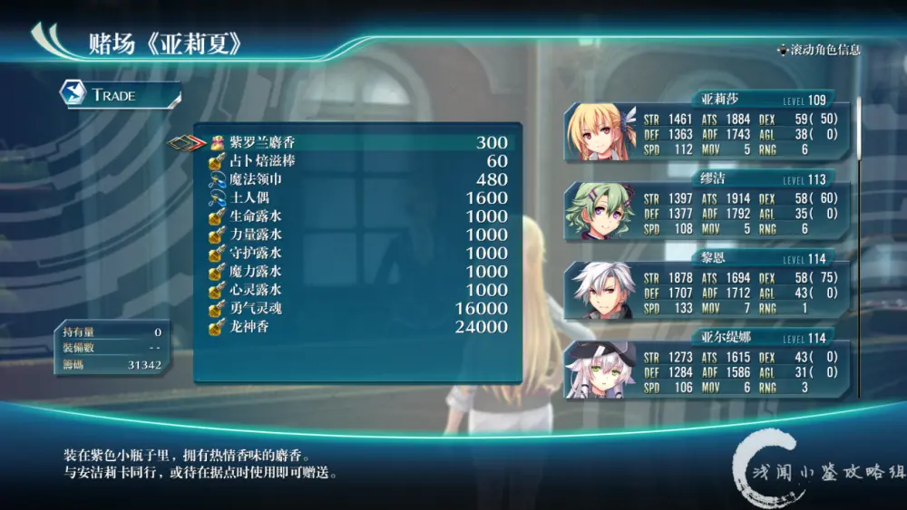
★酒吧·住宿《隐士》内·柜台茱莉亚可买：
推荐料理「清脆酱菜」·并且获得其食谱
清脆酱菜：新鲜香草/爽口洋葱/粗碎岩盐/魔兽之壳/魔兽油脂/魔兽粉末各1个
独门料理：亚莉莎
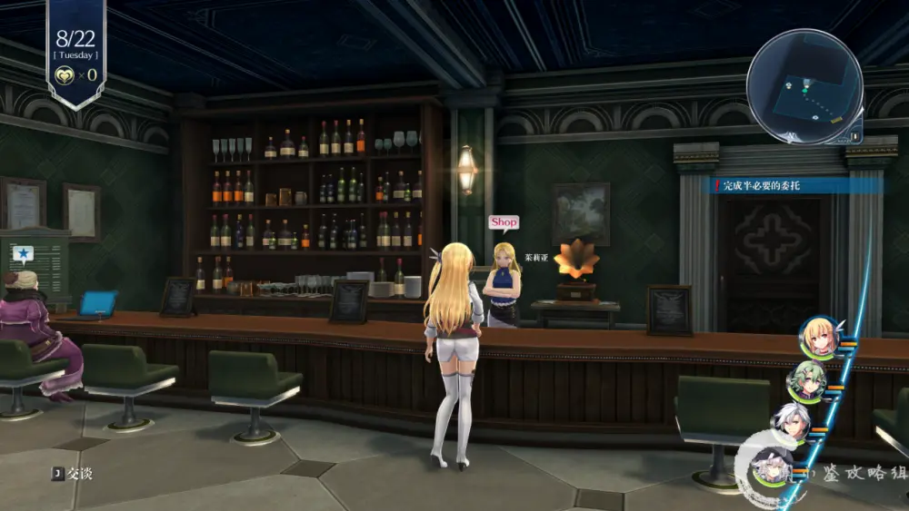
★伊梅尔达对话·可交付独门料理
交付九种独门料理·获得：力量露水/守护露水各2个
获得：托尔兹复兴值2点·累积132点
交付十二种独门料理·获得：力量露水/守护露水各3个
获得：托尔兹复兴值2点·累积134点
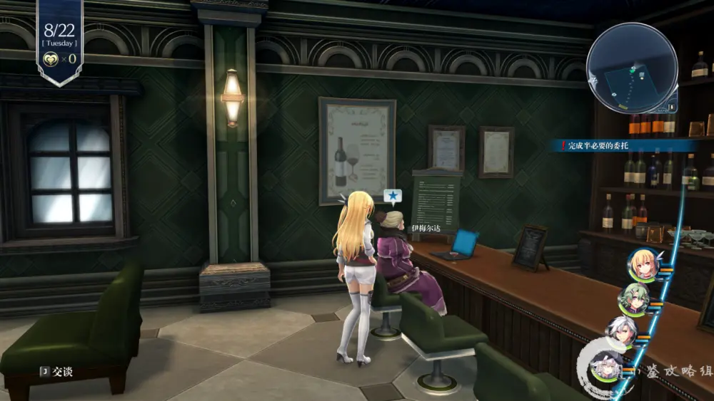
主线
找寻旅行者
①8月22日·在梅尔卡瓦终端机上·接取此任务
②酒吧·住宿《隐士》二楼最里房间内·卡艾拉对话
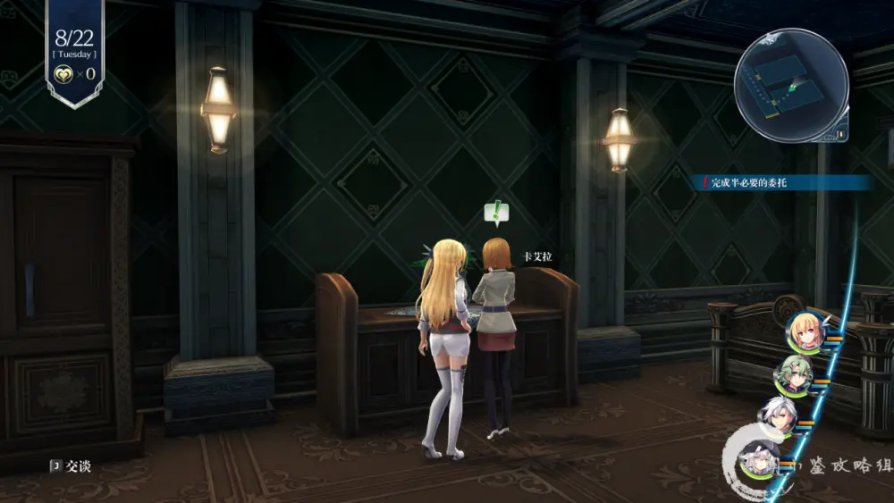
③揽客人员福克斯对话
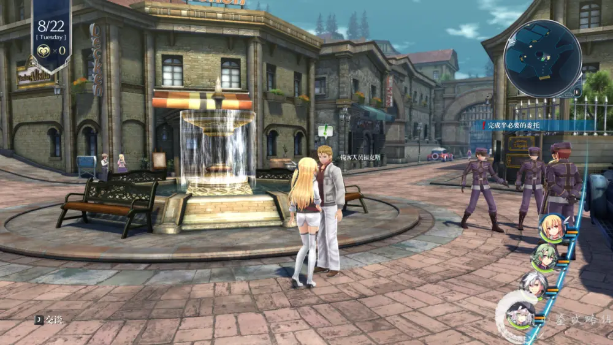
④《伊卡洛斯商城》内·柜台杨对话
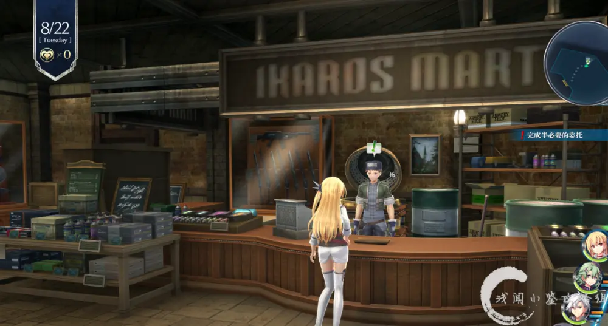
⑤当铺《麦肯罗》内·柜台麦肯罗对话
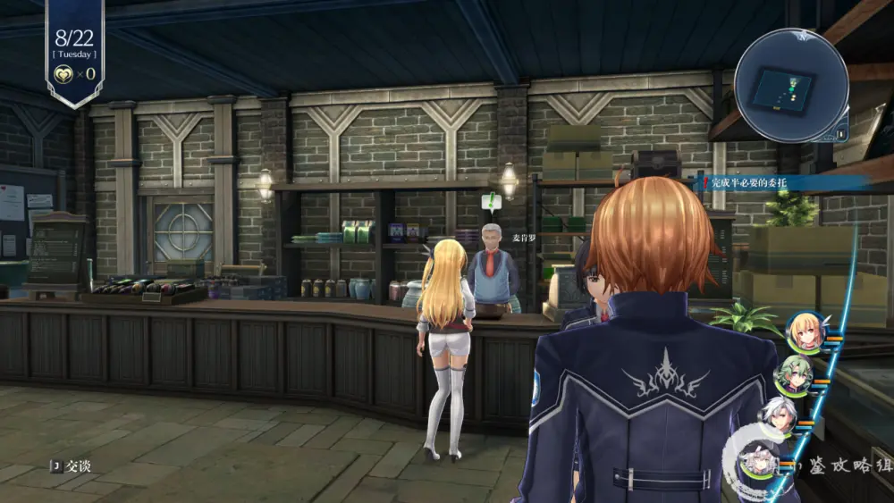
⑥全部调查后·出门·触发剧情·剧情后按照路线追到绿色感叹号处·触发剧情·获得AP：2
⑦北朗格多克峡谷道①·走到绿色感叹号处·调查·触发剧情
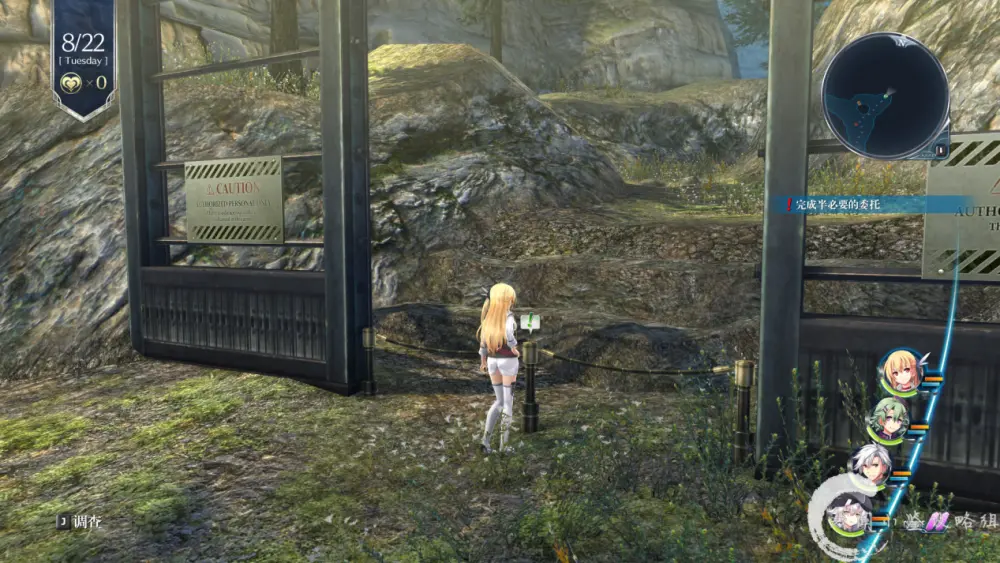
获得奖励：原力象征（饰品）·5500米拉
获得AP：3+2·照路线追到绿色感叹号处·触发剧情·获得AP：2
主线完成
拉马尔旧道①
★休息小屋《娜崔》内·桑蒂对话·获得艾德儿人物信息：广大人脉
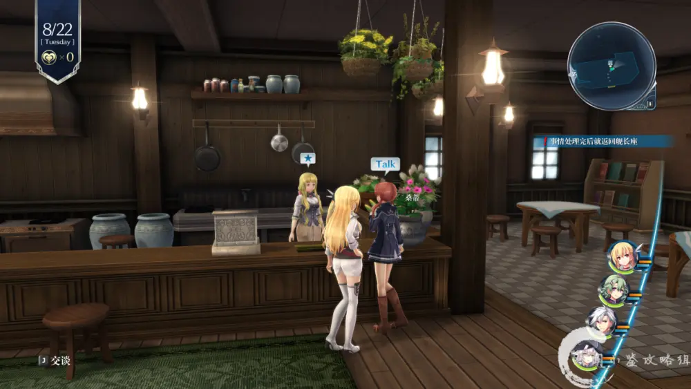
★柜台艾德儿对话·可交付极品料理
交付九种极品料理·获得：魔力露水/心灵露水各2个
获得：托尔兹复兴值2点·累积136点
交付十二种极品料理·获得：魔力露水/心灵露水各3个
获得：托尔兹复兴值2点·累积138点
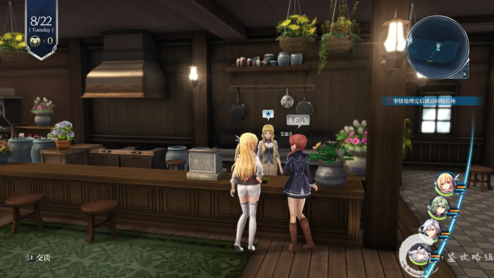
边境城镇阿尔斯塔
★武具·杂货《贾斯可商店》内·柜台贾斯可可买：杜巴莉指定礼物：蓝染缎带发夹
蓝染缎带发夹礼物增加杜巴莉STR/DEF15·黎恩STR/DEF2
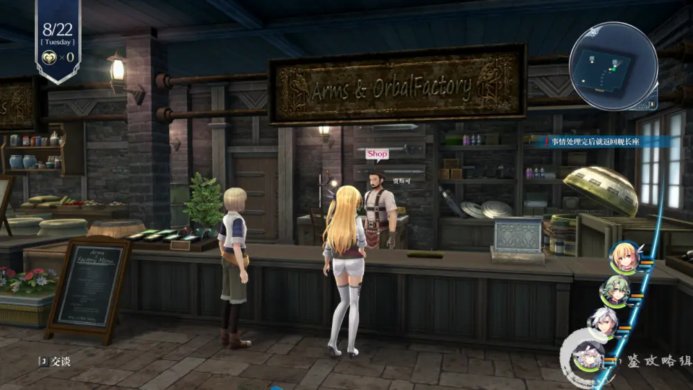
主线
修理旧型蒸馏机
①8月22日·在梅尔卡瓦终端机上·接取此任务
②蒸馏酒厂《圣石蔷薇》内·米里欧对话
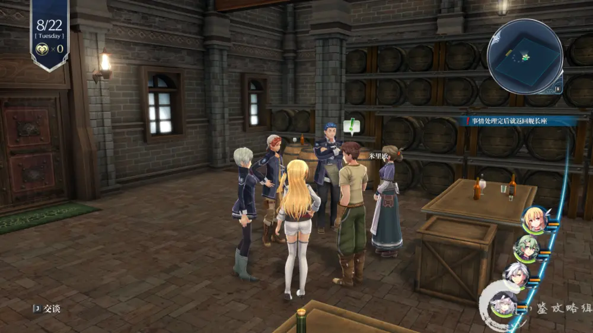
主线暂停
欧士基里亚斯盆地
本区域幻兽共1个：红焰象
怪弱水/时
怪有昏厥/中毒/延迟/石化/炎伤的特性
记得收集情报
战斗胜利·获得：失落魔法<业烬目珥>
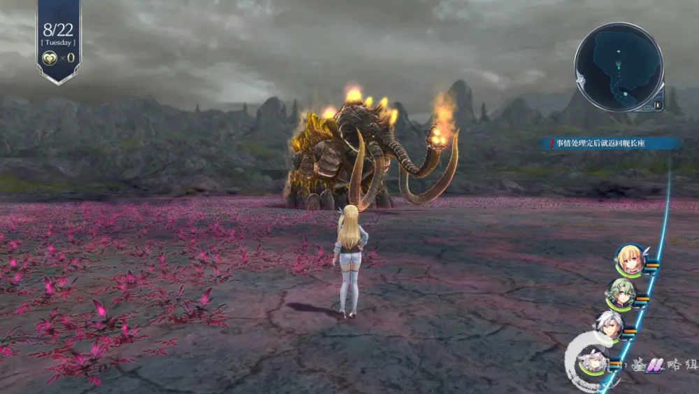
新增宝箱3个：黑发·安洁莉卡·粗碎岩盐/千万五谷/百药精酒各5个·冰冷皮带扣（饰品）
本区域新增敌人共5个：草地多头龙·灾厄黄蜂·巨型胡峰·耀晶石野牛·光辉鼠
记得收集情报
EXTRA新敌人共1个：黄金波波（随巨型胡峰战斗中出现）
记得收集情报
★蓝色星号处·拍照点⑧
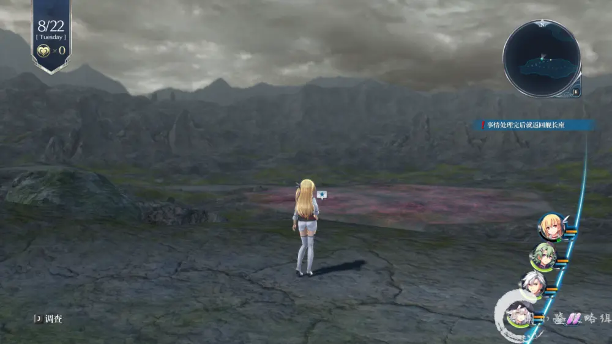
纺织镇帕尔姆
主线
修理旧型蒸馏机
③武具·工房《德怀特商会》内·柜台德怀特对话
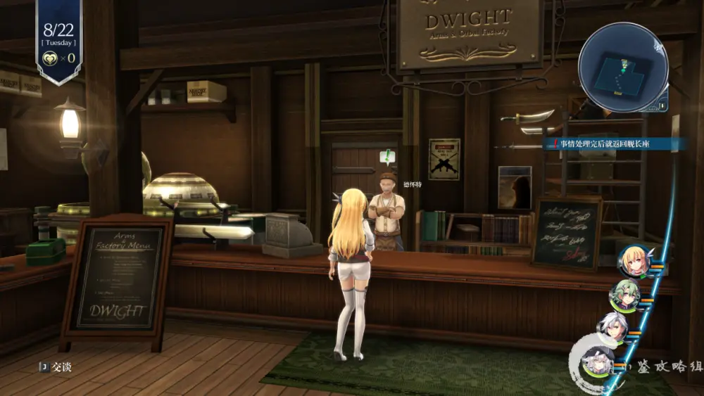
主线暂停
隐密村里霭灵
主线
修理旧型蒸馏机
④炼成工房《甘度夫》内·柜台甘度夫对话
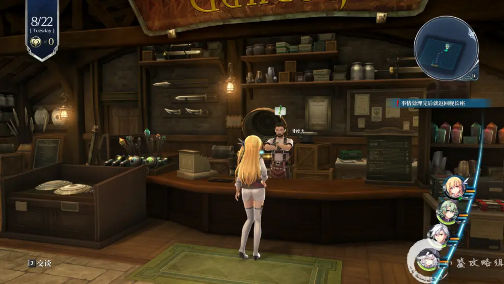
⑤快速移动到梅尔卡瓦·交谊厅·随从骑士流纳对话
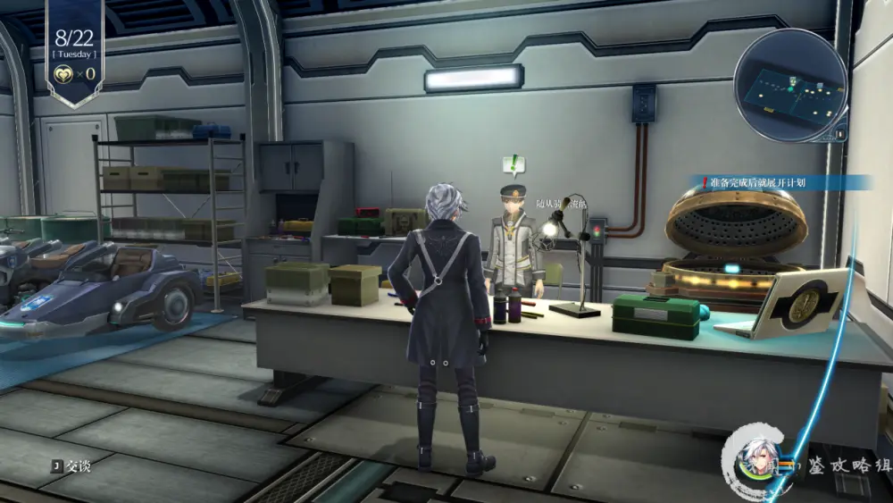
⑥快速移动到拉马尔西·边境城镇阿尔斯塔·蒸馏酒厂《圣石蔷薇》·米里欧对话
★剧情获得帕布罗人物信息：露一手的机会
获得奖励：大治愈之药5个·5500米拉
获得AP：4
获得：托尔兹复兴值4点·累积142点
主线完成
梅尔卡瓦
大家把队友换一下·考验箱要求：黎恩/艾略特/马奇亚斯/莎拉/亚尔缇娜
快速移动到考验箱·开启考验箱5/13
考验箱5：黎恩/艾略特/马奇亚斯/莎拉
BOSS：彩虹软体兽
怪弱时/空/幻
记得收集情报
考验箱13：黎恩/亚尔缇娜
BOSS：远古门犬
怪弱火/幻/风
记得收集情报
两个考验箱开启后·回到梅尔卡瓦
大家把队友换一下·考验箱要求：亚修/库尔特/艾玛/莎拉
快速移动到考验箱·开启考验箱14
考验箱14：亚修/库尔特/艾玛/莎拉
BOSS：强夺蟹
怪弱地/幻/水
记得收集情报
考验箱开启后·回到梅尔卡瓦
大家把队友换一下·考验箱要求：劳拉/艾玛/莎拉/菲
快速移动到考验箱·开启考验箱16/17
考验箱16：劳拉/艾玛
BOSS：金刚野牛
怪弱风/时/地/火
记得收集情报
考验箱17：莎拉/菲
BOSS：珍珠松鼠/全能松鼠/光鲜松鼠
记得收集情报
两个考验箱开启后·回到梅尔卡瓦·舰桥处随从骑士萝西努处换队伍
队伍要求：安洁莉卡和其他三位女性
隐密村里霭灵
杂货店《雷姆利克》内·欧罗伊老先生对话
钓鱼种类达到二十种·欧罗伊老先生处可获得：强力胺基酸凝胶·极
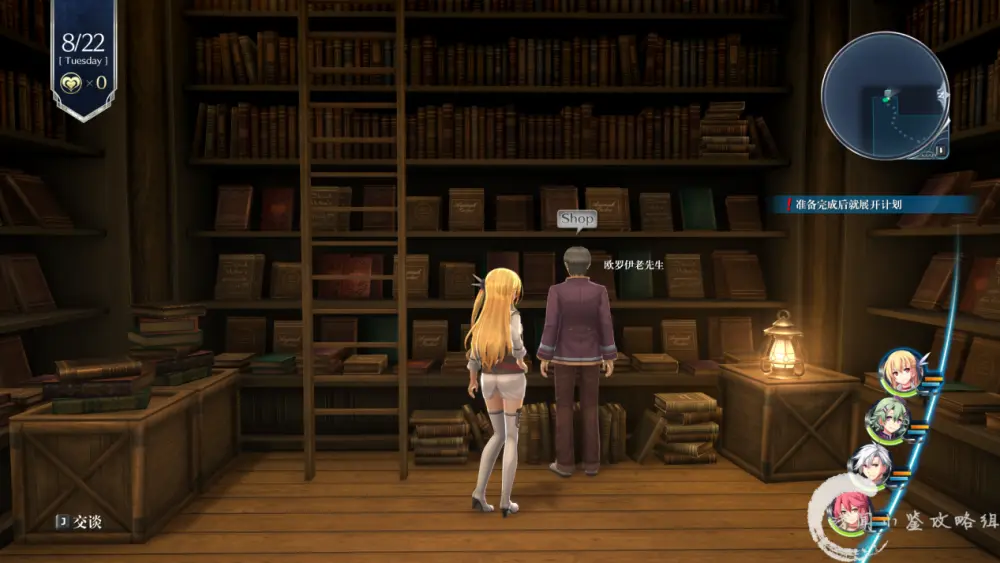
★绿色星号处可泡温泉·队伍内有安洁莉卡和其他三位女性·有小剧情
获得：托尔兹复兴值5点·累积147点
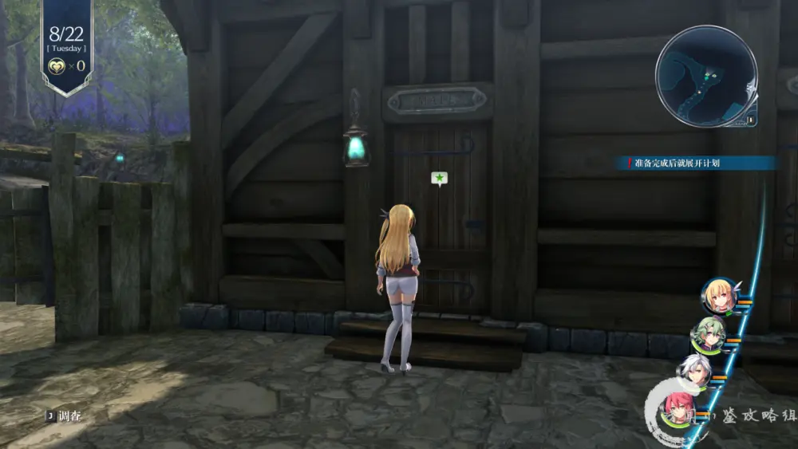
梅尔卡瓦
★ARCUSII报告风景照
获得：印刷照片⑧谢莉＆玛丽亚贝尔
获得：托尔兹复兴值2点·累积149点
全部结束后·存档·回到梅尔卡瓦上层·随从骑士萝西努对话·开始潜入作战
旧VII班成员中莎拉和菲只能二选一
选择两位其他成员·触发剧情
8月23日
南沙萨兰特街道①
走到红色感叹号处·触发剧情
圣特亚克
教堂广场
★果汁小站《戴娜》·摊主戴娜可买：
推荐料理「爽口莓果奶昔」·并且获得其食谱
爽口莓果奶昔：鲜奶/星形莓果/蜂蜜糖浆/魔兽明胶各1个·魔兽油脂2个
独门料理：安洁莉卡
★果汁小站《戴娜》·摊主戴娜可买：雪白综合果汁（后续需要）
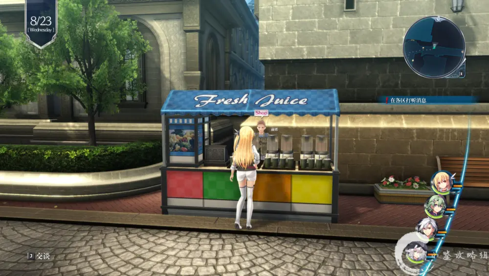
★百货《阿尔比昂庭院》内·时装《薛尔丹》柜台亚兰可买：
亚修指定礼物：绯红军装皮带
绯红军装皮带礼物增加亚修STR/DEF15·黎恩STR/DEF2
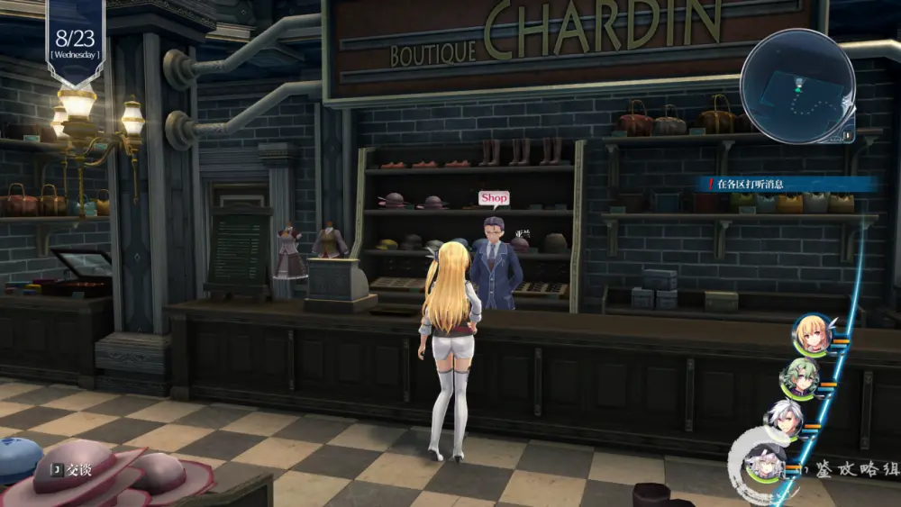
住宅区
公寓《月冠》内二楼·圣特亚克·旧游击士协会据点内·床可休息
★《钱伯工房》内·掌柜钱伯可买：莎拉指定礼物：紫耀手环
紫耀手环礼物增加莎拉STR/ATS15·黎恩STR/ATS2
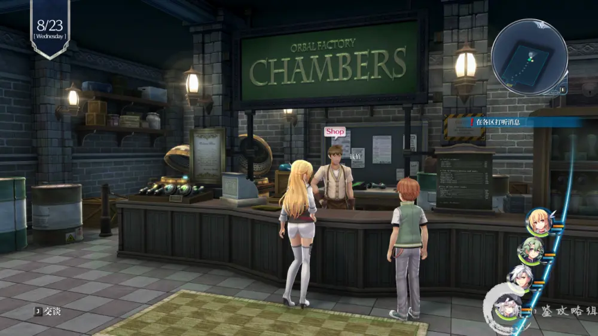
★交换·古董《狄蜜特》内·柜台路弗尔可交换：克洛指定礼物：银狼戒指
银狼戒指需要：
雪白综合果汁（教堂广场·果汁小站《戴娜》购买）
白色小路可乐饼（纺织市镇帕尔姆·酒馆《白色小路亭》购买）
银狼戒指礼物增加克洛STR/ATS15·黎恩STR/ATS2
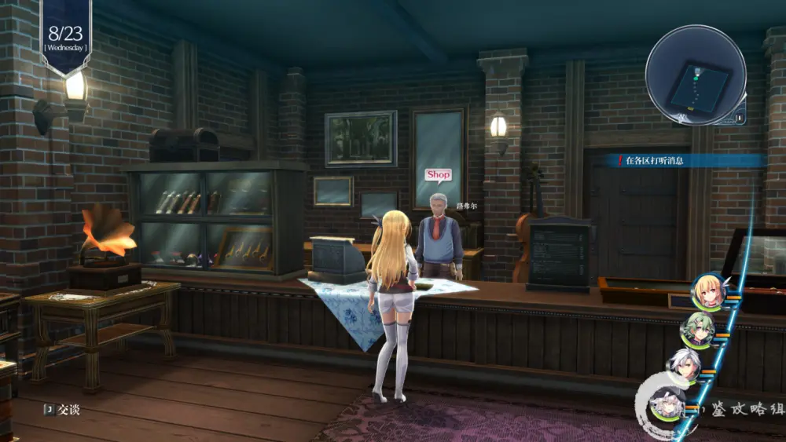
全部结束后·分别去教堂广场/住宅区/贵族街·三处红色感叹号处·分别对话·触发剧情
★咖啡·住宿《槐月》内·靠近菲欧娜触发剧情·并且解锁菲欧娜人物
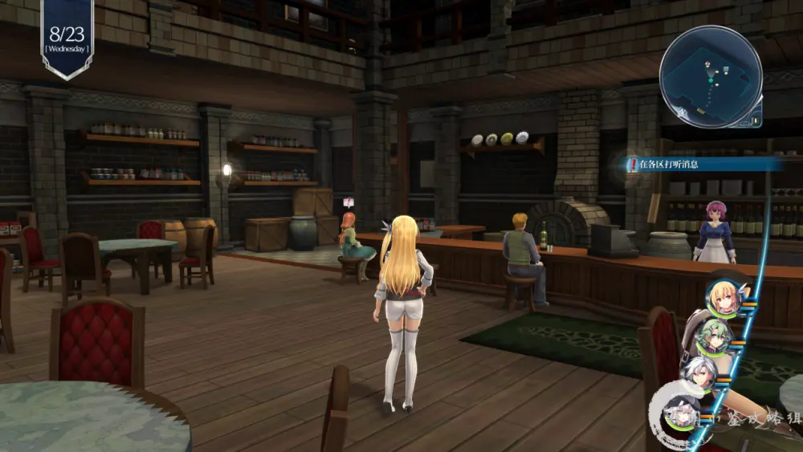
支线
发狂的爱马
①触发三处红色感叹号剧情后·教堂广场·万达对话·触发剧情·接到此任务
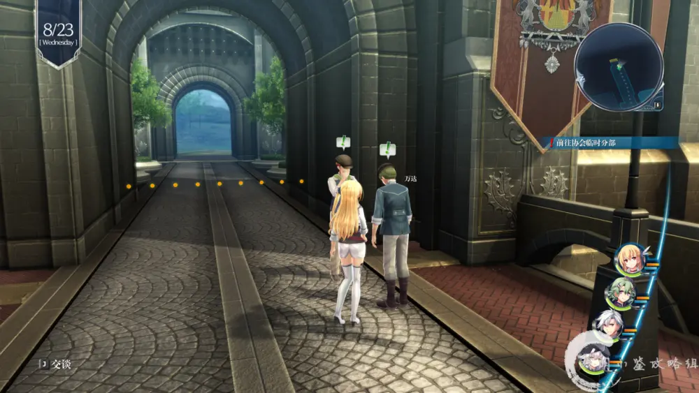
②前往北沙萨兰特街道①
支线暂停
北沙萨兰特街道①
宝箱2个：珊瑚幸运符（饰品）·七种耀晶片各100个
本区域新敌人共3个：钢壳甲虫·攻击野犬·雷电暴龙
记得收集情报
支线
发狂的爱马
③走到绿色感叹号处·触发剧情
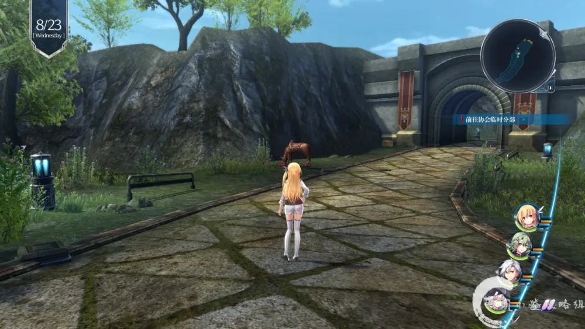
支线暂停
北沙萨兰特街道②
宝箱4个：星形莓果/苦番茄/蜂蜜糖浆各5个·神耀射线R（回路）·妨碍3（回路）
U物质5个
本区域新敌人共4个：碎岩蜻蜓·彩织蛾·巨角野猪
支线怪：肮脏赛马
记得收集情报
北沙萨兰特街道②钓鱼点：金鲑·岩穴鱼·锦鲤·红鲈
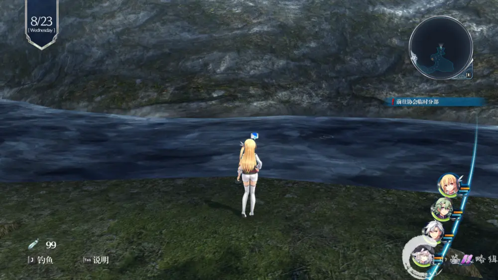
走到绿色星号处·触发剧情
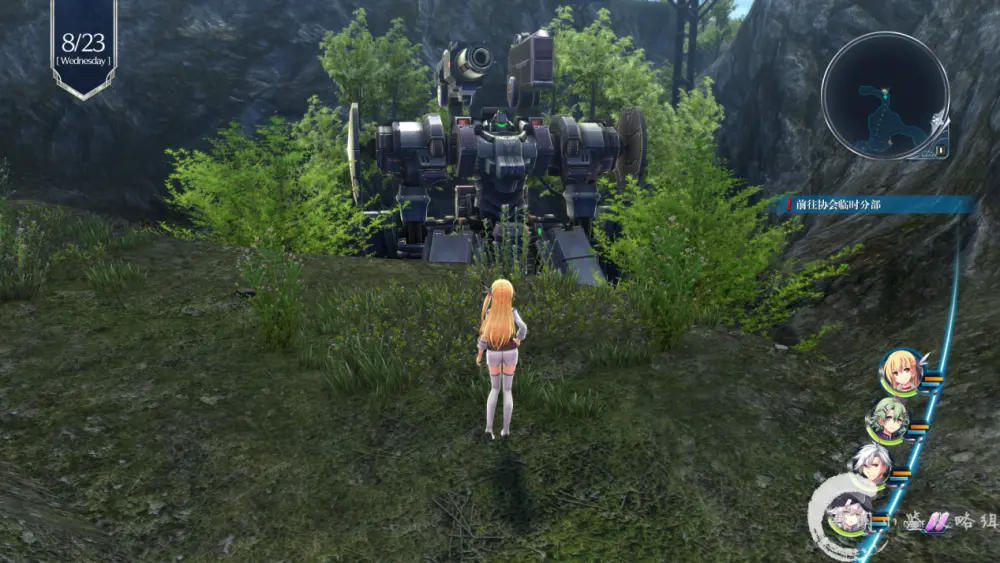
支线
发狂的爱马
④走到绿色感叹号处·触发剧情
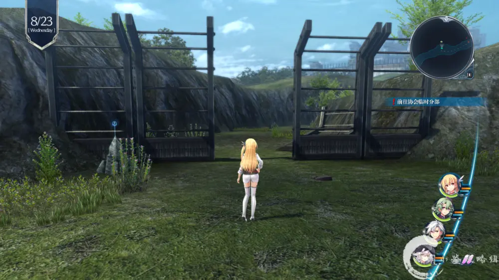
⑤走到下图位置后·存档！！！·前走·触发战斗
BOSS：肮脏赛马
怪弱地/空
记得收集情报
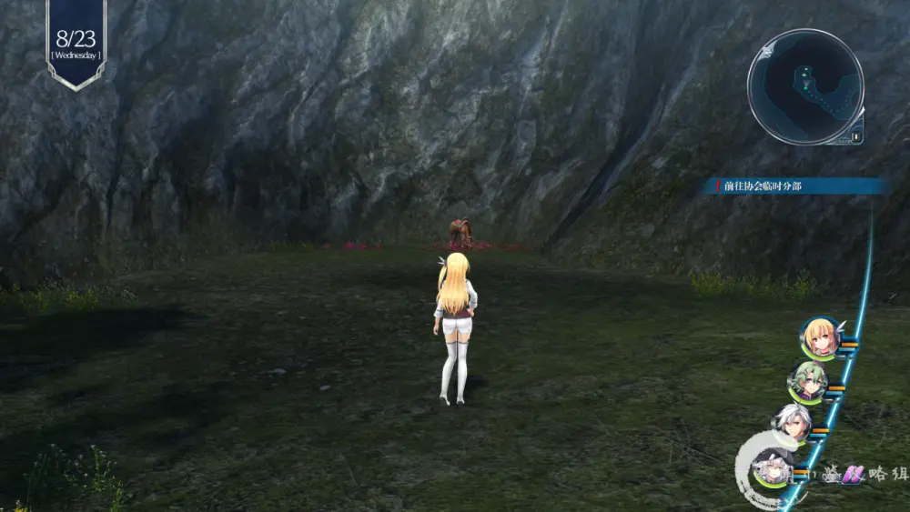
获得奖励：勇气灵魂·5500米拉
获得AP：4
支线完成
回到住宅街·公寓《月冠》内二楼·圣特亚克·旧游击士协会据点·存档·调查门·于协会分部交谈
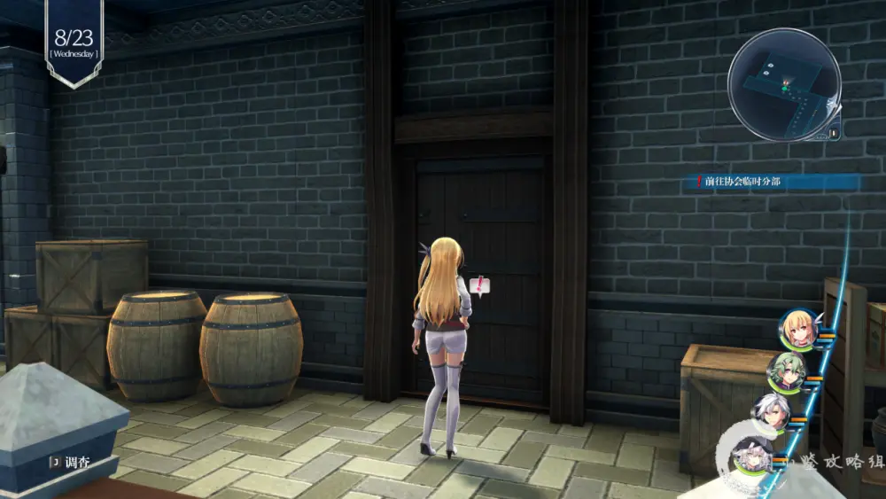
多雷诺尔要塞①
特殊回复装置：1个
机关：2个
宝箱3个：七种耀晶片各100个·圣灵药·改·神罚怒雷R（回路）
本区域新敌人共7个：潜影枪手G·潜影枪手M·潜影枪手R·方阵兵J9·第四师团士兵（剑）
第四师团士兵（枪）·玉帘
记得收集情报
★前走过图·触发剧情·并且解锁奈特哈尔中校人物
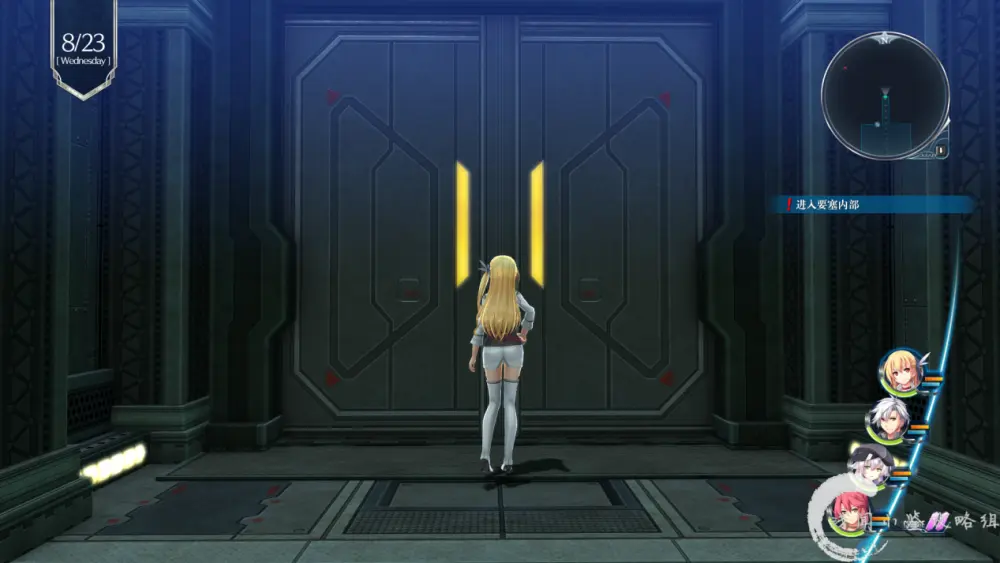
多雷诺尔要塞②
特殊回复装置：1个
机关：2个
宝箱3个：橘色胸花（饰品）·EP填充剂IV·全回复药
本区域新敌人共1个：亡命装甲兵II
记得收集情报
机甲战
魔煌机兵梅尔基亚·剑
正常状态下：头部
剑和盾分别在两侧驱动状态下：手臂
盾在前方驱动状态下：头部
魔煌机兵佐尔盖·枪
正常状态下：手臂
枪和盾在前方驱动状态下：头部
魔煌机兵佐尔盖·剑
正常状态下：身体
盾在前剑在后驱动状态下：手臂
★战斗胜利后·获得艾伦准尉人物信息：诅咒的影响
多雷诺尔要塞·司令室
特殊回复装置：1个
本区域新敌人共2个：奈特哈尔中校·克雷格将军
AP要求：全部成员未死亡
结算清单：第II部小结算②
第II部小结算②·总AP：26
升级学生阶级：甲伍级·获得：星杯挂坠（饰品）
托尔兹总复兴值：149点
升级分校等级：集结·获得：铜翼狮子小勋章（饰品）
<与克雷格等人激战>——AP2·全部成员未死亡·获得AP：2
<与提妲＆艾尔芬会合>——AP8
找寻旅行者——AP3+2·按照路线追到绿色感叹号处·触发剧情·获得AP：2
修理旧型蒸馏机——AP4
西拉玛尔街道的通缉魔兽——AP3
发狂的爱马——AP4

随便聊聊：
闪之轨迹IV·完美攻略·终版·正式连载
希望各位会喜欢
如果大家觉得攻略写的还可以 欢迎大家充电支持我们
您的每一次充电 是对攻略组的支持和鞭策
也是对我们作品的认可 以及继续做下去的动力！
小浅在这里先拜谢各位老爷小姐（鞠躬
另外攻略连载完结后·群内将提供付费攻略的Pdf版下载
欢迎各位催更
Q群：907289369
等待各位来撩